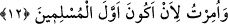

kerâmet ızhâr eden kimse sabırlı değildir. Aksine sabırlı o kimsedir ki sabrı kendisini
rızâ makamına ulaştırana kadar sabrından lezzet alır.”
11. De ki: Bana, dini Allah’a hâlis kılarak O’na kulluk etmem emrolundu.
Rivâyet edilir ki Kureyş kâfirleri Hz. Peygamber (a.s.)’a: “Bize getirdiğin şeye seni
sevkeden şey nedir? Atalarının ve kavminin ileri gelenlerinin dinine bakmıyor musun?
Onlar Lât ve Uzzâ’ya tapıyorlar. Sen ise bu dine sarılıyorsun?” dediler. Bunun üzerine
Allah Teâlâ şöyle buyurdu:
“Ey Muhammed, müşriklere “De ki:” Allah tarafından “Bana, dini Allah’a hâlis
kılarak.” Yâni, “De ki: Bana, sadece Allah’a kulluk etmem ve O’na ortak
koşmamam emrolundu.” (er-Ra’d, 36) âyetinde de ifâde edildiği gibi ibâdet ile
kasdedilenin başkası değil Hak Ma’bûd olması sûretiyle ibâdeti şirkten ve riyâdan
arındırarak “O’na kulluk etmem emrolundu.”
12. Bana müslümanların ilki olmam emrolundu.
Böylece “Bana” dünyada da âhirette de onların önderi olmam için bu ümmetten
“müslümanların ilki olmam emrolundu.” Çünkü dinde öncelik, ancak dinde ihlâs iledir.
Kim ihlaslı davranır ise önde gelen biri sayılır. İşte Hz. Peygamber (a.s.) ümmetinden
önce ihlasla muttasıf olduğu için her iki cihanda onlardan önce gelmiştir. Çünkü
sonradan gelen önden gidenin mertebesine yetişemez. Ashab ile onlardan sonra
gelenlerin durumunu görmez misin?
Âyetteki “lâm” harfinin fazlalık olduğu açıktır. Bu durumda “__WORD__
(el-En’âm, 6/14) âyeti gibi olmuş olur. Bu durumda mânâ şöyle olur: ‘Ben, kendi
zamanımda yaşayanlardan müslüman olanların ilki olmakla emrolundum.’ Çünkü
İslâm’a girme ve atalarının dinine karşı koymaya çağırma hususunda her peygamber -
kendinden önce müslümanlar olmuş olsa da- kendi zamanında yaşayanlardan önce gelir.
Bazıları der ki: “İhlas, gizli-açık tüm hareketlerin hiçbir şey karışmaksızın yalnızca
Allah için olmasıdır.”
Cüneyd (k.s.) şöyle demiştir: “Allah, Hz. Peygamber (a.s.)’dan başka hiç kimsenin
ihlas makamının tamamına takat getiremeyeceğine işâret etmek üzere halkın hepsine
ibâdeti emretmişken O’na ibâdette ihlâsı emretmiştir.”